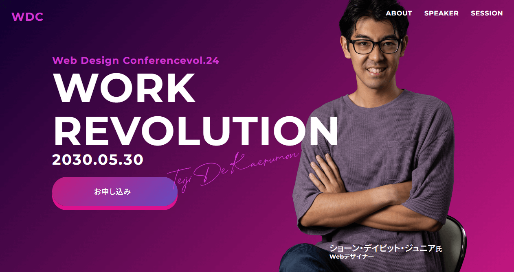
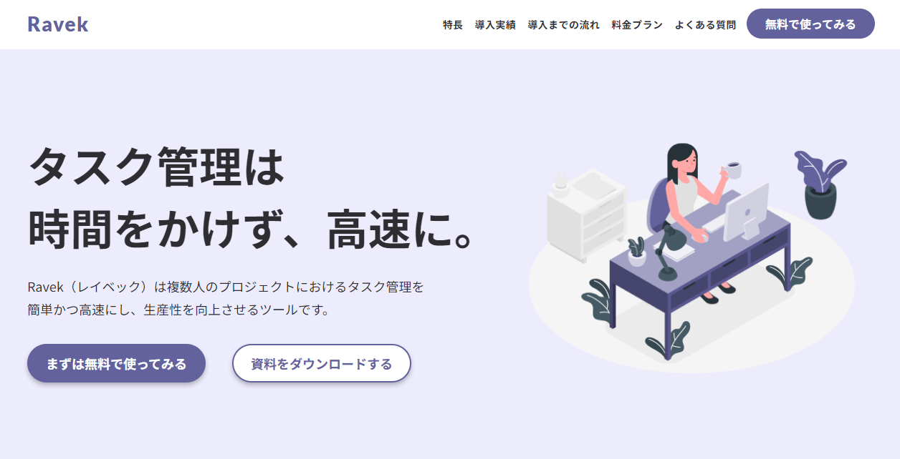
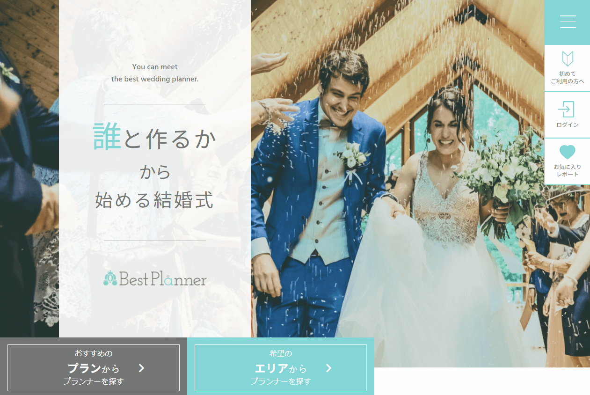
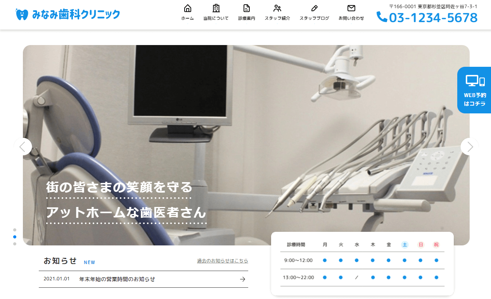

トレーニングジムサイト(静的サイト)
- 制作期間
- 1カ月
- 説明
-
ポートフォリオを増やしたく自主製作したものになります。
要素を重ねるようなデザインが多くpositionやネガティブマージンの使い方を学びました。
- 苦戦したところ
-
・セクションの境目を波線にするところ。
・要素が重なる部分のレスポンシブ対応など。
ゲームサイト(静的サイト)
- 制作期間
- 1カ月未満
- 説明
-
ポートフォリオを増やしたく自主製作したものになります。
パララックスの実装やサウンド・動画をwebサイトに組み込む方法を学びました。
流れるテキストやローディング画面の実装方法を学びました。
- 苦戦したところ
-
・vhやskewの扱い、パララックスの実装。

WEBデザイナー紹介サイト①(静的サイト)
- 制作期間
- 1カ月未満
- 説明
-
コーディングの基本を復習するために自主制作したものになります。
レスポンシブのコーディングの練習にもなりました。
- 苦戦したところ
-
・問い合わせフォームの実装
WEBデザイナー紹介サイト②(静的サイト)
- 制作期間
- 1カ月
- 説明
-
コーディングの基本を復習するために自主制作したものになります。
ページ数が多く、コーディングの基礎を総復習することができました。
- 苦戦したところ
-
・ページ数が多く大変でした。
・背景に画像を設定するところなど。

LP(静的サイト)
- 制作期間
- 1カ月未満
- 説明
-
ポートフォリオを増やしたく自主製作したものになります。
GulpやFLOCSSの練習も兼ねて取り組みました。
flexを使う場面が多く使い方にかなり慣れることができました。
- 苦戦したところ
-
・テーブルの実装。
・Gulpを使うまでの準備(インストールなど)。
・FLOCSSでのクラス名の付け方。

ウェディングプランナーサイト(静的サイト)
- 制作期間
- 1カ月
- 説明
-
ポートフォリオを増やしたく自主製作したものになります。
PugでのコーディングやFLOCSSの練習も兼ねて取り組みました。
- 苦戦したところ
-
・要素の数が非常に多くデザインを再現するのが大変で時間がかかりました。
・Pugでのコーディングに慣れておらずコーディングに苦戦しました。
・要素の数が多いためクラス名が長くなることが多く分かりづらくなってしまった。
カフェサイト(WordPressオリジナルテーマ)
- 制作期間
- 2カ月以上
- 説明
-
課題として初めて静的サイトをWordPress化したものになります。
テンプレートタグやループ文などを使いサイトを動的に動かす方法を学びました。
プラグインやカスタム系の使い方から本番環境への移行方法など基礎を1からから学びました。
メンターの方に質問したり教材や本・ネット検索などを使いなんとか最後までやり遂げることができました。
- 苦戦したところ
-
・ページ数が多くデザインのパターンも多かったためHTML・CSSのコーディングだけでとても時間がかかってしまいました。
・jQueryの経験が少なかったためスワイパーやドロワーメニューなど動きをつけるのに苦戦しました。
・WordPressの知識がなかったため全てにおいて苦戦しました。
何が分からないかも分からないような状況もあり、特にカスタム投稿やタクソノミーの理解が難しかったです。

クリニックサイト(WordPressオリジナルテーマ)
- 制作期間
- 2カ月未満
- 学んだこと
-
自主制作で作ったWordPressサイトです。
1つ目のカフェサイトを作ってから時間が空いてしまったため復習も兼ねて作りました。
自分で残したメモや検索を使って、自力で最後までやり遂げることができました。
- 苦戦したところ
-
・時間が空いてしまったためWordPressの知識を忘れている部分も多く思ったより時間がかかってしまいました。
特にカスタム系の実装やプラグインを使ったパンくずリストの実装に手こずってしまいました。
・ページごとに変わるレイアウト（開いているページのメニューだけ色を変えるなど）に苦戦しました。
・以前と同じようなところで苦戦することが多かったので、より詳しくメモを残すことで改善できると思いました。
ポートフォリオ掲載サイト(WordPressオリジナルテーマ)
- 制作期間
- 1.5カ月程
- 学んだこと
-
ポートフォリオを掲載するために作ったサイトです。
デザインの知識は無いですが初めてデザインから作ってみました。
今までの知識を生かすことを意識して動きを付けたり色んな配色のパターンを試しました。
- 苦戦したところ
-
・デザインの仕方が分からず時間がかかりました。
他のサイトを参考にして真似しながらなんとかそれっぽく形にできました。